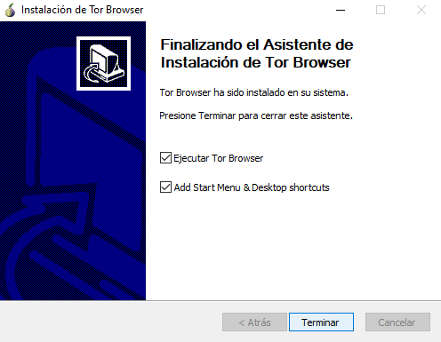
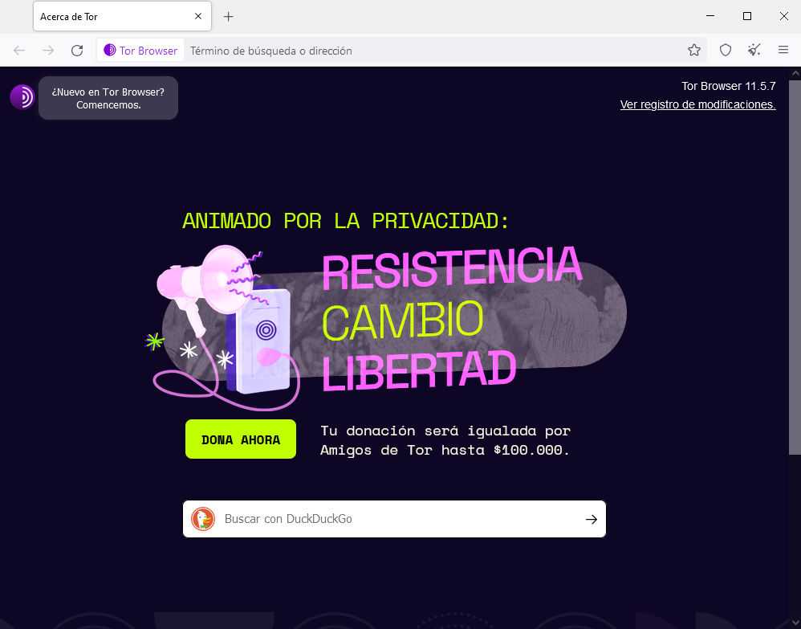

Inicio:
Hola, estas en la guía numero 1 para aprender todo sobre la Deep web, en esta guía veras contenidos como: Diferencias entre la Deep Web y la Dark Web, Como acceder a la Deep Web, Contenidos, Navegadores, Etc. Esta Guía puede ser algo extensa, así que no dudes en saltar directamente a el contenido que te interese, espero que resuelvas todas tus dudas.
Diferencias entre la Web Superficial, Deep Web y Dark Web
Los contenidos que se pueden encontrar a traves de los buscadores convencionales como Google son la Surface Web o Web Superficial, Aquí podemos encontrar los contenidos a los que accedemos día a día, por ejemplo Youtube, las noticias, Twitch, Etc.
Aveces solemos llamar erroneamente o confundir la Deep Web con la Dark Web, la Deep Web es todo lo que no este indexado en los buscadores convencionales, por ejemplo Google Drive, Dropbox o incluso Netflix, ya que para acceder a este mismo, necesitamos pagar una mensualidad.
Luego llega la Dark Web la cual es la Web intencionalmente oculta, aquí podemos encontrar contenido oculto, gran parte de este Ilegal, para acceder a la Dark Web necesitamos Navegadores Especiales como: Tor, el cual trataremos a traves de esta guía.
Instalación de TOR
La instalación de Tor es sencilla, lo primero que debemos hacer es entrar a la Web de TOR, una vez entres veras algo así:

Una vez estes en la página te desplazaras hacia abajo hasta llegar a esta sección:
Deberas Hacer click en descargar, eligiras una de las opciones basado en el Sistema Operativo que utilices. Una vez echo esto se te descargara un archivo como este:
Le daremos doble click para comenzar la instalación, una vez abierto se nos abrira una ventana como esta:
Aquí seleccionaremos nuestro lenguaje y le daremos en "OK", luego nos dira lo siguiente:
Aquí seleccionaremos la ubicación en la que se instalara TOR, si solamente deseamos instalarlo sin rodeos le daremos click en instalar, empezara a llenarse una barra de instalación y luego de instalarse nos marcara esto:
Le daremos en "Terminar" y enhorabuena, ya tienes Tor
Configuración de TOR
Una vez instalado Tor veras que te dira algo del tipo
Le daras click en "Conectar" y te llevara directamente al Navegador Tor
Y finalmente lo lograste, instalaste y configuraste Tor
TOR
Tor es un navegador que no es tan dificil de usar, se ve esteticamente parecido a Google, pero nos dejara acceder a páginas onion o .onion, los cuales son los tipos de enlaces que encontraremos en la web profunda. Otra particularidad de este navegador es que Tor tiene una red de seguridad la cual ayudara a mantenerte seguro aparte del VPN. Con este navegador estaremos listos para empezar a ingresar a las primeras páginas.
Seguridad
Antes de entrar a la Deep Web debemos tomar medidas de seguridad, para emprezar el uso de una VM, MV o Máquina Virtual, la cual explicamos en esta Guía, sirve para proteger nuestro equipo físico, pero para proteger nuestra red necesitaremos un VPN, la cual también explicamos en esta Guía.
Seguridad de TOR
Tor viene con seguridad base, pero también puedes configurarla por ti mismo, puedes obtener mas información en esta Web Oficial. Una de las caracteristicas de Tor, es que a la hora de acceder a un sitio web, nuestra IP pasa por varias ubicaciones mediante un sistema de repetidores llamado Red Tor, esto con fin de ocultar nuestra ubicación física y otorgar una capa extra de seguridad.
Sentido común en la Deep Web
Una vez entres en la Deep Web no seas imbécil, no compartas información personal, ni uses tus emails convencionales, en la Deep Web encontraras Servicios de mail y foros, recuerda tener cuidado y no usar tu identidad real, TEN CUIDADO!!!
Que podemos encontrar en la Deep Web
En la Deep Web podremos encontrar Foros, Ventas ilegales, Delitos, Noticias, y Cosas Random. Pero aunque pienses que todo es ilegal en la Deep Web, esto es un mito, la mayoría de las cosas son gatos, noticias y todo tipo de contenido que se puede encontrar en la Web Superficial. Un tema interesante es que en la Deep Web al no haber control ni censura, se usa en varios países para apoyar la libertad de expresión, así que tambien podemos encontrar noticieros y periodistas.
Antes de entrar a la Deep Web
En la Deep Web los enlaces cambian todo el tiempo, para hacer pasar desapercibidas las páginas, por eso algunos de los enlaces que encuentres en esta guía posiblemente no estaran disponibles cuando intentes usarlos, otro problema es que al tener tanta seguridad, las páginas tardaran un poco mas de lo normal en cargar. Los enlaces de la Deep Web se veran algo extraños, no seran páginas como "pagina.com" seran algo estilo "sdnhsygvbfsabdgyhsdyfvby.onion". Por ultimo recuerda que los links .onion solo son accesibles a travez de Tor. Y Ten Cuidado.

Y bueno, esta fue la Guía para la Deep Web, espero que te haya gustado.